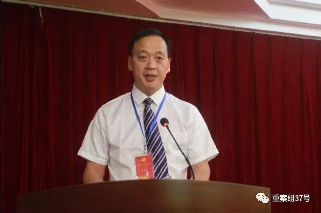
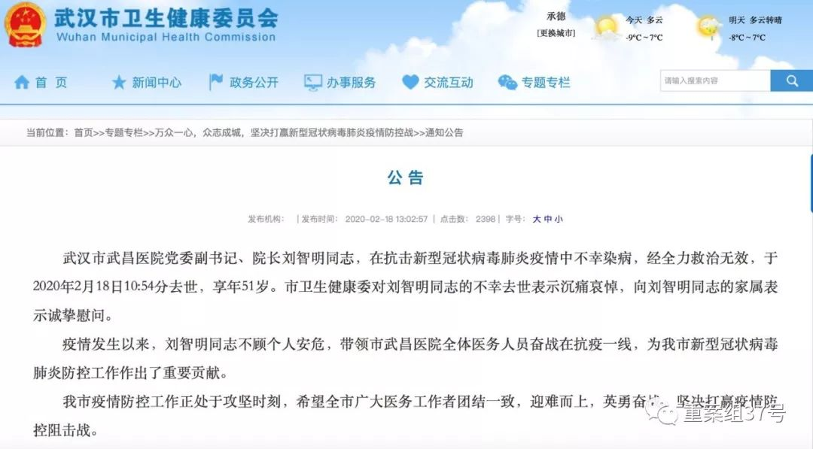

武昌医院院长刘智明患新冠肺炎去世 为首位殉职院长
原文链接 备份链接 【财新网】（记者 高昱 包志明 萧辉）经历了将近一天的抢救后，武汉武昌医院院长刘智明还是在今天（2月18日）上午不幸殉职。武汉市卫健委网站2月18日中午13时发布公告称，武汉市武昌医院党委副书记、院长刘智明同志，在抗 …

妻子蔡利萍是武汉市第三医院光谷院区ICU护士长，也一直在一线抗疫。离丈夫所在的医院只有20公里路，夫妻俩却近一个月没见过面，靠电话断断续续联系着。
全文3080字，阅读约需6分钟
▲武汉武昌医院院长刘智明去世 系第一位感染新冠肺炎去世医院院长。新京报我们视频（ID：wevideo）
2月18日10时54分，武昌医院院长刘智明感染新冠肺炎抢救无效离世，享年51岁。
他是自疫情爆发以来，武汉首位因感染去世的院长。截至当日，在抗击疫情工作中，武汉至少已有8位医护人员因公殉职。武汉市卫健委发布讣告称，疫情发生以来，刘智明同志不顾个人安危，带领市武昌医院全体医务人员奋战在抗疫一线，为我市新型冠状病毒肺炎防控工作作出了重要贡献。
妻子蔡利萍说，疫情发生后，两人一直在一线，近一个月没有见面，直到他感染前才去给他送换洗的衣服；前同事感慨，刘智明倾力于定点医院的改造和救治，最后一通电话也聊的都是工作。
更多人记得的，是那个医术好又待人温和的医生和“大哥”。
━━━━━
带病守一线，夫妻俩近一个月没见过面
北京协和医院援鄂医疗队的专家抢救了刘智明一整夜，并启用了ECMO（体外膜氧肺，俗称人工肺）。
2月18日上午，同济医院中法新城院区重症监护室大门紧闭，值班护士告诉记者，刘智明“病情十分凶险”。“人工肺”设备的使用，意味着病人出现了重症心肺功能衰竭。
妻子蔡利萍悬着心。她是武汉市第三医院光谷院区ICU护士长，也一直在一线抗疫。离丈夫所在的医院只有20公里路，夫妻俩却近一个月没见过面，靠电话断断续续联系着。

▲2月18日上午，武汉市武昌医院院长刘智明因新冠肺炎病逝，享年51岁。公开资料图
1月20日，武汉市卫健委公布了61家发热门诊医疗机构和9家定点救治医疗机构名单。这家始建于1948年的武昌医院名列其中。
医生宴继喜的朋友圈呈现了武昌医院之后的接诊日常。1月21日，忙完工作的宴继喜发动态说：“下午5点半接班，一直工作到凌晨1点半，连续8个小时，一个人一支笔，看了91个病号。”
刘智明的任务也重了起来。一名医务人员回忆，被列为定点医院后，刘智明曾多次到隔离病房检查病房的改造进度。
空军军医大学官网刊发的一篇报道介绍，武昌医院的重症医学科1月26日被支援医疗队接管前，医护人员连续工作近30天没有休息。
被接管时，武昌医院共收治了发热病人469人， 其中重症患者30人。医院也遇到了医疗防护物资紧缺的状况。在微博上，武昌医院曾先后两次发通告，向社会请求捐赠物资。
据妻子蔡利萍回忆， 实际上刘智明1月中旬后已经出现持续低烧。被列为定点医院后，她更担心丈夫身体吃不消。
1月22日凌晨4点，蔡利萍接到丈夫电话，让她收拾一些换洗衣物送去，因为成为定点医院后他就不能回家了。她没有想到的是，当天下午，蔡利萍就被告知刘智明感染了新冠肺炎。

▲武昌医院外景。受访者供图
━━━━━
“最后一次通话聊的还是工作”
1月23日，改造后的武昌医院开始接收发热患者。也是在这一天，多日没有休息的刘智明，住进了医院ICU，成为一名新冠肺炎重症患者。武昌医院重症监护室一位医生告诉记者，刘智明病情一开始就很严重，血氧饱和度掉的很快。在和妻子的聊天记录中，刘智明说自己 “缺氧、烦躁、全身虚汗”。
他的病情一度有好转的迹象。上述医生也证实，有一段时间，刘智明病情转为平稳。上了呼吸机后，情况稍微好转。 就在所有人都松了一口的时候，2月14日，刘智明病情突然恶化。随后转到有ECMO的同济医院中法新城院区抢救。
4天后，刘智明因抢救无效去世。
武汉市卫健委官方对外发布的讣告称， “疫情发生以来，刘智明同志不顾个人安危，带领市武昌医院全体医务人员奋战在抗疫一线，为我市新型冠状病毒肺炎防控工作作出了重要贡献。”

▲武汉市卫健委评价，刘智明带领市武昌医院全体医务人员奋战在抗疫一线，为防疫工作作出了重要贡献。官网截图
副院长黄国付告诉新京报记者，截至2月10日，武昌医院共收治新冠肺炎确诊患者521名，“比给我们定任务还多收治17个”。
51岁的刘智明曾在武汉市第三人民医院工作20多年，一路从脑外科医生晋升到医务处主任。提到刘智明，武汉市第三人民医院前院长金捷一度哽咽，“他工作热情，敢于担当，最后一次跟他通话聊的还是工作”。1月18日，金捷最后一次见到刘智明，“他当时看起来状态很好。”两人匆匆打了个照面就各自忙工作去了。
1月21日，武昌医院将开始收治感染者。当天下午5点，刘智明给金捷打来电话，商量医院改造的事。
按照上级部署，武昌医院是一家三级综合医院，需要临时改造成专门收治新冠肺炎患者的传染病医院。“只有两天时间，工作量非常大。不仅涉及已有病人的安置，还有医院床位改造、增加重症监护室和重建医院院感系统。”
金捷说，两人在电话中商量了改造中的难点和方向，谈的都是工作，“他还很有信心地说没有问题。”
20多年从医生涯，刘智明给同事的印象很好。时任武汉市第三人民医院院长的金捷把刘智明提拔到了医务处，“无论是医患纠纷，还是其他的问题，院领导讲一个原则，他都能很好的贯彻好，非常善于解决复杂问题，是难得的人才”。2013年刘智明调任武昌医院做院长。第二年，武昌医院就二级医院升级到三级综合医院。
同年，刘智明还被武昌区委区政府授予“武昌英才”荣誉称号，2014年，入选“武汉市人民政府博士资助”项目，2015年，获评武汉市“十百千人才工程”人选。
噩耗传来，金捷不敢相信，两人相识20个年头年，去年还在一起喝酒。

▲年轻时的刘智明（后排左三）。受访者供图
━━━━━
同事好友悼念那个“温和“的医生和“大哥”
刘智明救治过许多患者，不少人想到他都会提起他的“温和”。
他曾经救治过的一位面肌痉挛患者说，“刘医生医术高，对病人也非常负责，出院后他还几次打电话问我恢复情况，让我非常感动。”
曾在急诊科和他共事一年多的同事说，他是脑外科专家，做的都是极其精密的手术，靠的就是胆大心细。”
武汉第三医院护士陈萍（化名）至今还记得刘智明的特别之处，“有的医生做完手术就不管了，但刘医生碰到患者纠纷，都会主动站出来替我们解围。陈萍喜欢跟着刘智明一起查床，他讲解病情很深入，能学到很多东西。
一名医务人员说，从未曾想过，一直被大家视为“工作狂”的院长，会被新冠病毒夺走生命。他说，院长一心扑在工作上，在医院被纳入定点医院后，更是“舍小家顾大家”
2月17日晚，实名认证为“湖北省卫健委宣教中心党委书记、主任”的微博博主@全科健康，一条动态帖文，将刘智明病危的消息，最先传达给了公众。
博主是湖北卫健委宣传中心主任吕长兵 ，平日与刘智明关系较好。吕长兵还记得，年前，他还和刘智明在一起参加诗会。他会谦卑地唤刘智明一声“大哥”，他在微博里悼念，祝愿“老哥一路走好”。
《蓝图已绘就，跨越在今朝》，是武昌医院为迎接新年，在2019年的最后一天，在微信公众号上推送的贺词。
在这篇由刘智明与该院党委书记王力霞联名发表的新年贺词中，他回顾了过去一年医院取得的成就，展望2020年。
他总结2019年是自己与医院共度的“非同寻常的一年”，他祝愿每位医务人员“身体健康”。
汐月（化名）是武昌医院的一名护士，知道消息后，“还是忍不住哭了。”
去年，她到医院办入职手续，找院长刘智明签字。院长平易近人，问她家在哪里，回一趟家需要多久，还鼓励她工作加油。
去年国庆，医院组织了一次合唱，演唱的曲目是《我和我的祖国》。刘智明站在汐月前面，起头领唱。
“仿佛就在昨天。”
*新京报记者 王飞翔 李一凡 编辑 李明 潘佳锟 *
点击下图进入”全国新型冠状病毒感染肺炎实时地图“

*值班编辑 花木南 吾彦祖*


晋江男子参加宴席致3710人被隔离，已有10人确诊，3697人解除隔离

本文部分内容首发自新京报公号“重案组37号”
未经新京报书面授权不得转载使用
欢迎朋友圈分享


原文链接 备份链接 【财新网】（记者 高昱 包志明 萧辉）经历了将近一天的抢救后，武汉武昌医院院长刘智明还是在今天（2月18日）上午不幸殉职。武汉市卫健委网站2月18日中午13时发布公告称，武汉市武昌医院党委副书记、院长刘智明同志，在抗 …
原文链接 备份链接 澎湃新闻记者 汤琪 廖艳 温潇潇 薛莎莎 实习生 赵雨萌 夏梦洁 接送刘智明遗体的殡仪馆车辆抵达。 澎湃新闻记者 汤琪 图 在殡仪馆的车辆抵达前，不少人保持着沉默，有人时而将口罩取下，擦拭眼泪。 2月18日上午，湖北 …
原文链接 备份链接 “他是一个英雄” 2月18日上午10点54分，武昌医院院长刘智明因感染新冠肺炎，经抢救无效去世，享年51岁。 “刘院长是一个很负责的人，内心非常强，我们医院的同事都很敬重他。他长得高高大大的，很有才气，结果说没就 …
原文链接 备份链接 我就想站在这里，站在第一线，没有为什么。我觉得，我还可以，我能扛住压力，尽快尽多的救治更多的人、更多的小人物。 2月18日上午10:30左右，武汉武昌医院院长、神经外科专家刘智明因新冠肺炎抢救无效，在同济医院中法新城院 …
原文链接 备份链接 【财新网】（记者 赵今朝 杨睿）北京首例新冠肺炎确诊病例从收治到病愈的经历引发瞩目。 据新华社2月10日报道，自今年1月12日起，首都医科大学附属北京地坛医院开始承担新冠肺炎患者的救治、筛查、隔离工作，收治了北京市 …